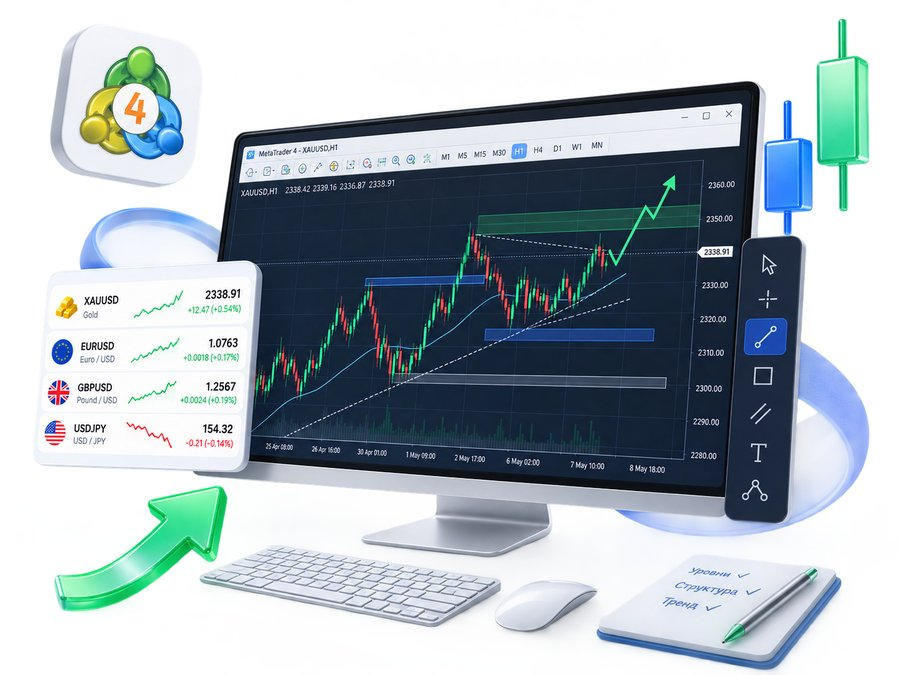
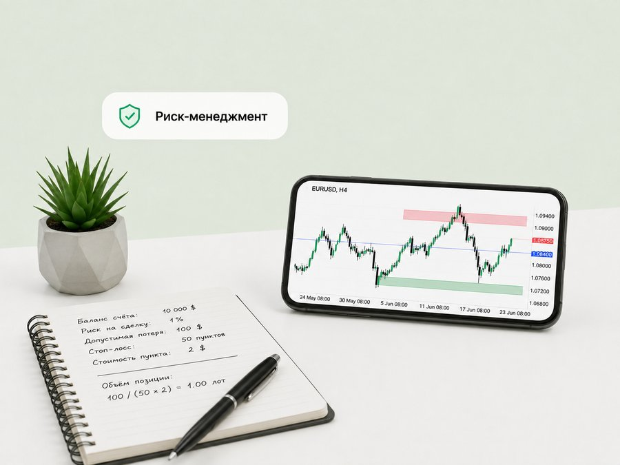
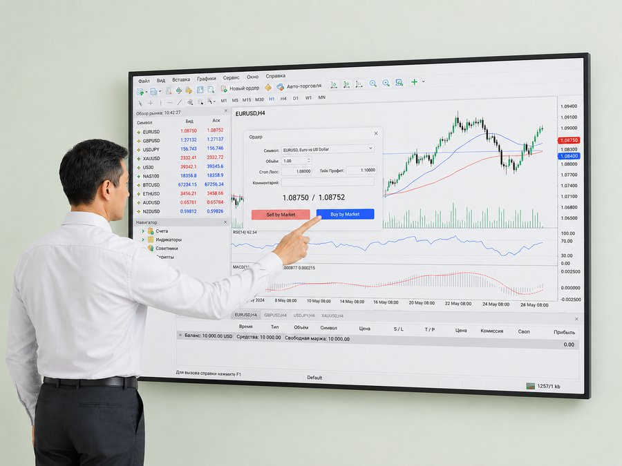
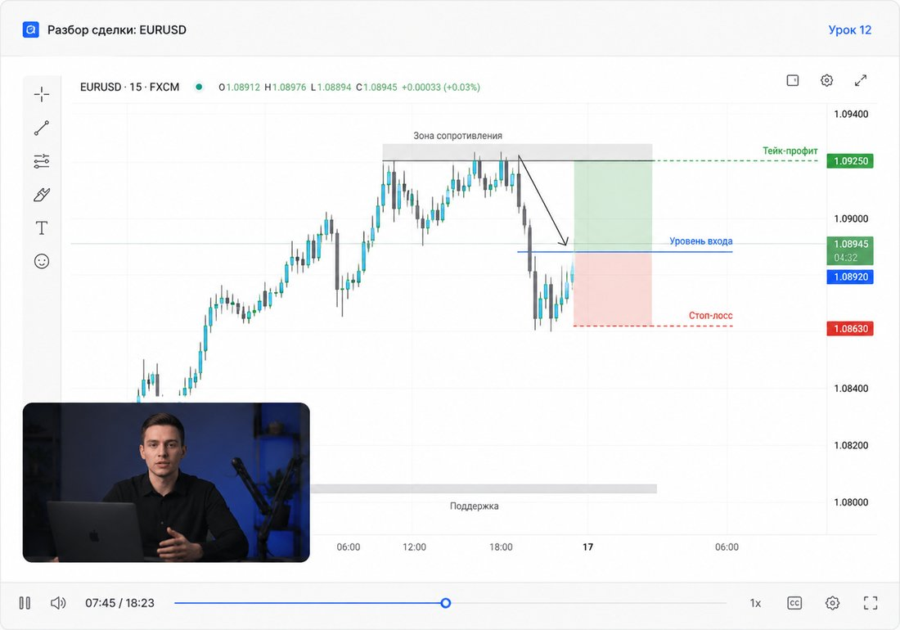

01
Читать график
Тренды, уровни, структура рынка, импульсы и коррекции — вместо хаотичных свечей понятная картина.
От первых терминов и устройства финансовых рынков — до самостоятельного анализа графика и осознанных сделок.
Подходит даже тем, кто никогда раньше не торговал
Три навыка, из которых собирается любая осознанная сделка.

Тренды, уровни, структура рынка, импульсы и коррекции — вместо хаотичных свечей понятная картина.

Сколько допустимо потерять в одной сделке и какой объём позиции этому соответствует.

Ордера, объём, Stop Loss и Take Profit — уверенная работа с терминалом без лишних кликов.
Не потому что трейдинг невозможно освоить. Обычно причина проще — и она повторяется почти у всех.
Каждая сделка по новым правилам. Результат нельзя ни повторить, ни разобрать.
Вход по азарту, выход по страху. Решение принимает состояние, а не расчёт.
Одна неудачная сделка забирает то, что копилось неделями.
Копируете входы, но не понимаете логику — и не можете её повторить.
Пробелы в основе ломают всё, что строится сверху.
Попытка получить результат за неделю почти всегда стоит депозита.
Задача — научить принимать торговое решение самостоятельно: понимать, что происходит на рынке, и обосновывать каждый вход.
Смотреть программу
Мы учим не «угадывать движение», а работать по системе, где у каждого решения есть основание, а у каждой сделки — заранее просчитанный риск.
Пока нет правил входа, выхода и сопровождения позиции — это не торговля, а серия догадок. Систему собираем до того, как открыть первую сделку.
Навык отрабатывается на разборах и учебном счёте. К реальным деньгам вы переходите с готовым планом, а не с надеждой, что повезёт.
Риск-менеджмент — не приложение к стратегии, а её основа. Задача — остаться в игре, а не заработать всё за неделю.
Так будет выглядеть ваш набор умений после курса.
Без «секретных стратегий» и готовых входов — только понятная система, которой вы сможете пользоваться самостоятельно.
8 модулей по порядку: база и терминал, анализ графика, риск и психология, сборка стратегии и практика. Первые два модуля — бесплатно
Без марафонов и «секретных стратегий» — последовательная теория, задания и разборы.
Материал идёт от простого к сложному — не нужно собирать знания по роликам из YouTube.
Каждая тема закрепляется разбором реальных ситуаций на рынке.
После модуля — небольшое задание: разметить график, посчитать риск, описать сценарий сделки.
Куратор разбирает ваши задания и сделки: где допущены ошибки и как их исправить.
Без жёстких дедлайнов: обучение совмещается с работой или учёбой.
«Я вообще ничего не понимаю в трейдинге»
Курс идёт с нуля: рынок, цена, терминал. Первые два модуля бесплатные — проверьте, ваше ли это.
«Торговал сам и сливал депозит»
Чаще дело не в стратегии, а в отсутствии правил. Соберём систему и разберём ваши сделки.
«Не верю, что этому можно научить»
Мы не обещаем доходность. Обещаем понимание: почему цена двигается и чем вы рискуете в каждой сделке.
Нет. Программа начинается с устройства рынка и базовых терминов, поэтому подходит тем, кто никогда не торговал.
Модули проходятся в своём темпе. Формат рассчитан на то, чтобы совмещать обучение с работой или учёбой.
Нет. Цель обучения — научить принимать торговые решения самостоятельно и понимать их основание.
Нет. Навыки можно отработать без риска для капитала, а к реальным сделкам переходить уже с готовым планом и правилами риска.
Нет. Торговля на финансовых рынках связана с риском потери вложенных средств. Обучение даёт знания и систему принятия решений, но не обещает прибыли.
Доступ к первым двум модулям и консультация — бесплатно. Расскажем про формат обучения и подскажем, с какого шага начать новичку.